Antes de empezar
Para todos
CEP es un programa de control estadístico de procesos. En la planta se toman muestras cada cierto tiempo (por ejemplo, cinco envases cada 15 minutos) y se anotan sus mediciones o sus defectos. CEP guarda esas muestras, las compara con el comportamiento habitual del proceso y avisa cuando algo cambia.
Funciona en un solo computador y no necesita internet. Todos los datos quedan en ese equipo, en un único archivo.
Dos vistas para dos trabajos distintos
| Vista | Quién la usa | Para qué sirve |
|---|---|---|
| Operario | Personal de planta | Registrar las muestras, ver en palabras simples cómo va el proceso, atender las alertas y reportar problemas. |
| Ingeniería | Ingeniería de calidad, análisis o supervisión | Definir qué se controla, cargar datos, fijar los límites, analizar la capacidad, diseñar el muestreo, configurar las reglas y emitir informes. |
Se cambia de vista con los botones Operario e Ingeniería del encabezado. La vista Operario no usa términos técnicos y su menú nunca lleva a pantallas de Ingeniería.
Cómo leer este manual
- Los botones que se pulsan se ven así: Guardar muestra.
- Los textos que aparecen en pantalla van en cursiva: «El proceso va bien».
- Una ruta como Ingeniería›Plantilla de carga significa: elegir la vista Ingeniería y, en el menú de la izquierda, la pantalla Plantilla de carga.
- Las palabras con subrayado punteado muestran su definición al pasar el puntero.
- En las capturas, los círculos rojos numerados señalan partes de la pantalla. Al pasar el puntero sobre un círculo se resalta su explicación debajo, y al revés. Haz clic en una imagen para verla en grande.
Hay cuatro tipos de recuadros:
Información útil para entender lo que pasa.
Una forma de trabajar más rápido o con menos errores.
Algo que cambia el resultado si no se tiene en cuenta.
Una acción que afecta los datos o que no conviene hacer.
Instalar y abrir CEP
Para todos
Tener CEP instalado y abierto en tu computador.
El archivo CEP-Setup-1.0.1.exe y Windows 10 u 11 de 64 bits.
Unos 3 minutos.
Antes de instalar
- Windows 10 u 11 de 64 bits y unos 205 MB libres. No hace falta ser administrador.
- Microsoft Edge WebView2: ya viene en Windows 11 y en los Windows 10 actualizados. Si falta, el instalador avisa y da el enlace para descargarlo.
- Opcional: MiKTeX, para que los informes PDF salgan con el formato LaTeX. Sin él, CEP genera el PDF con un formato alternativo con los mismos textos.
Paso a paso
Abre el instalador
Haz doble clic en CEP-Setup-1.0.1.exe. Si Windows muestra la ventana azul «Windows protegió su PC», pulsa Más información y después Ejecutar de todas formas.
Porque el instalador no tiene firma digital, algo que cuesta dinero y no hace falta para un programa de uso interno. CEP no se conecta a internet ni modifica nada fuera de su carpeta.
Elige si quieres un acceso directo en el escritorio
Deja marcada la casilla si quieres abrir CEP desde el escritorio (recomendado) y pulsa Siguiente.
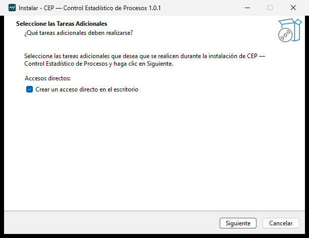
Confirma e instala
El asistente resume lo que va a hacer. Pulsa Instalar y espera unos segundos mientras se copian los archivos.
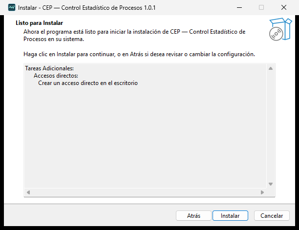
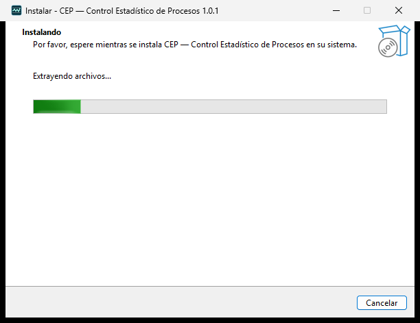
Termina
La última pantalla dice dónde quedan tus datos. Deja marcada Abrir CEP ahora y pulsa Finalizar.
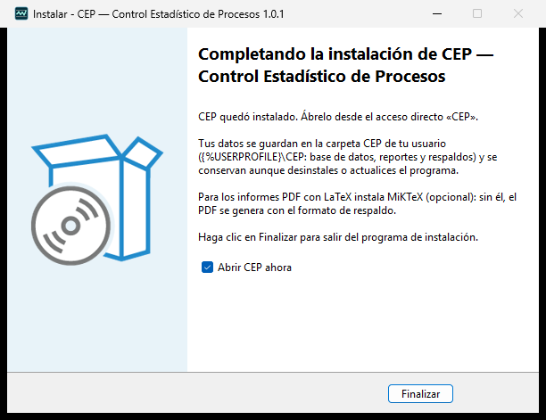
La primera vez que se abre
CEP se abre en su propia ventana, sin navegador. Mientras arranca se ve esta pantalla. La primera vez puede tardar hasta un minuto (Windows revisa el programa); las siguientes, unos segundos.
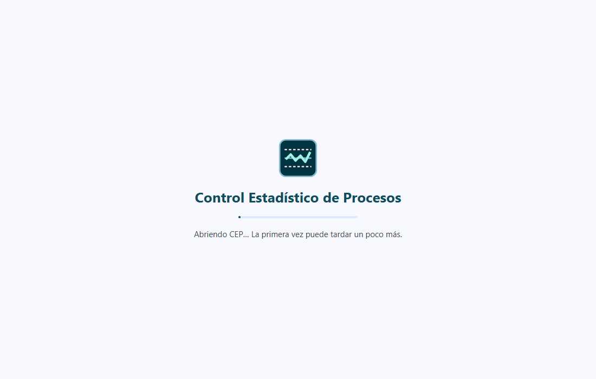
Al terminar, CEP muestra la vista Operario. Como todavía no hay nada cargado, lo dice y ofrece dos caminos: Crear la primera variable o cargar los datos de demostración.
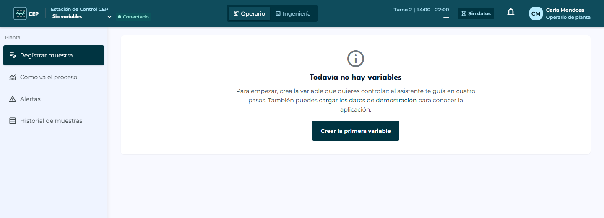
En Ingeniería›Base de datos y respaldos, pulsa Cargar demostración: se carga un proceso de envasado y los ejemplos del libro de Montgomery para probar todo sin miedo a equivocarse. Cuando quieras empezar con tu proceso, vuelve a un respaldo vacío (ver Base de datos y respaldos).
Si intentas abrir CEP cuando ya está abierto, aparece «CEP ya está abierto en este equipo. Busca su ventana en la barra de tareas». Al cerrar la ventana se cierra el programa.
Dónde quedan tus datos
Todo se guarda en C:\Users\<tu usuario>\CEP\, fuera de OneDrive:
| Archivo o carpeta | Qué contiene |
|---|---|
| cep.db | La base de datos: procesos, muestras, alertas e historial. |
| reportes\ | Los informes PDF y Excel generados. |
| respaldos\ | Una copia de la base cada vez que abres el programa (se guardan las últimas 20). |
| registro.log | Registro técnico de errores, útil si hay que diagnosticar un problema. |
Actualizar a una versión nueva
- Cierra CEP.
- Ejecuta el instalador nuevo y sigue los mismos pasos. Se instala encima del anterior: no hace falta desinstalar.
- Abre CEP. En Ingeniería›Base de datos y respaldos verás el número de versión.
La carpeta CEP de tu usuario se conserva siempre. Para desinstalar, usa Configuración de Windows›Aplicaciones.
Ideas clave
Para todos · sin fórmulas
Estas son las ideas que aparecen en todo el programa. Si las entiendes, el resto del manual se lee solo.
Proceso, variable y muestra
- Un proceso es la línea o máquina que se vigila, por ejemplo «Línea de Envasado L-04».
- Una variable es lo que se revisa en cada muestra. Puede ser una medición (un peso, un diámetro, una temperatura) o un conteo (cuántas unidades salieron malas, cuántas fallas tiene una pieza). Un proceso puede tener varias variables.
- Una muestra es el grupo de unidades que se revisa cada cierto tiempo, por ejemplo 5 envases seguidos. En la parte técnica también se llama subgrupo. Cada muestra tiene un número que no se repite: #1, #2, #3…
- Cuántas unidades tiene cada muestra y cada cuánto se toma forman el plan de muestreo.
Límites de control y valores aceptados
Son dos cosas distintas y conviene no confundirlas:
El rango en el que se mueve el proceso cuando funciona como siempre. Los calcula CEP a partir de los datos. En las gráficas son las líneas rojas; entre ellas está la zona normal.
Lo que exige el cliente, la norma o el plano: un mínimo, un máximo y un valor ideal. Los define el ingeniero. En las gráficas son las líneas grises punteadas.
Un proceso puede estar dentro de sus límites de control y aun así fabricar piezas fuera de lo aceptado (el proceso es estable, pero no es capaz). También puede pasar lo contrario: todas las piezas sirven, pero el proceso cambió y eso merece una revisión.
Las dos etapas: Fase I y Fase II
| Etapa | Qué se hace | Cómo se ve en CEP |
|---|---|---|
| Fase I conociendo el proceso | Se juntan 20 a 25 muestras tomadas en condiciones normales, se calculan límites provisionales y se descartan las muestras afectadas por causas conocidas. Al terminar, el ingeniero congela los límites. | Estado gris «Conociendo el proceso». |
| Fase II monitoreo | Cada muestra nueva se compara con los límites congelados. Si sale de lo normal o aparece un patrón extraño, se genera una alerta. | Estado verde, ámbar o rojo. |
Cómo detecta CEP que algo cambió
CEP no solo mira si un punto se sale de los límites. También busca patrones que, por azar, casi nunca ocurren en un proceso estable: muchos puntos seguidos del mismo lado, una subida constante, valores que se acercan al límite. Cada patrón es una regla de detección. Pruébalo: elige un patrón y mira qué puntos marcaría CEP.
- Qué se ve
- Qué significa
- En CEP
El estado del proceso
El encabezado y la vista Operario muestran siempre el estado con un color y una frase. Es lo primero que hay que mirar:
| Estado | Qué significa | Qué hacer |
|---|---|---|
| El proceso va bien | Fase II sin alertas pendientes. | Seguir tomando las muestras a tiempo. |
| Hay señales de que algo está cambiando. | Revisar la alerta, observar la máquina y anotar lo encontrado. | |
| Detener y avisar | El proceso se salió de lo normal, o hay una parada o un lote retenido. | Avisar al supervisor o al ingeniero antes de seguir y anotar en la alerta qué pudo pasar. |
| Conociendo el proceso | Fase I: los límites son provisionales. | Registrar las muestras como siempre. |
| Sin datos | La variable todavía no tiene muestras. | Registrar o cargar las primeras muestras. |
Conocer la pantalla
Para todos
Todas las pantallas comparten el mismo encabezado y un menú a la izquierda. Pasa el puntero sobre los números para ubicar cada parte.
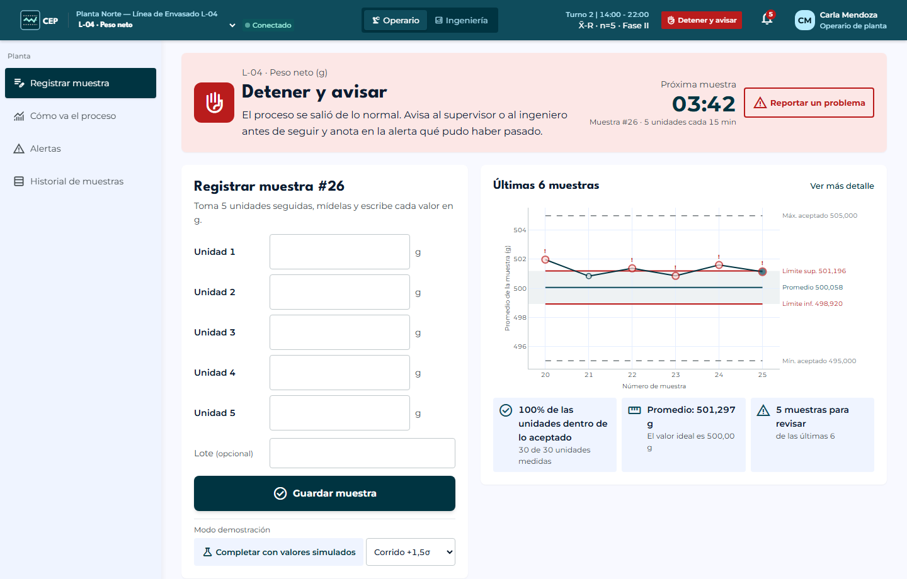
- Proceso y variable activos. Al pulsarlo se elige otra variable; todas las pantallas pasan a mostrar esa. La lista incluye + Nueva variable…. CEP recuerda la última elegida.
- Operario / Ingeniería. Cambia de vista.
- Turno y carta. El turno en curso y, debajo, el tipo de gráfica, el tamaño de muestra y la etapa.
- Estado del proceso. El mismo color y frase de la tabla de estados.
- Campana. Cuántas alertas hay sin resolver; al pulsarla se abren las alertas.
- Usuario. Quién está usando el programa. Al pulsarlo se cambia. No hay contraseñas: el nombre sirve para dejar constancia de quién hizo cada registro.
- Menú. Las pantallas de la vista actual. Abajo, un recuadro con el plan de muestreo y cuándo toca la próxima muestra.
El resultado de cada acción aparece como un mensaje breve en la esquina inferior derecha (por ejemplo «Muestra #26 guardada»). Los errores dicen qué pasó y cómo arreglarlo. Las acciones importantes, como congelar límites o restaurar un respaldo, abren una ventana de confirmación que a menudo pide un motivo: ese motivo queda en el historial.
Si una acción necesita un nombre y no hay ninguno, CEP lo pide. Escribirlo al principio evita interrupciones y deja el historial ordenado.
Recorrido: de cero a monitorear
Para Ingeniería
El orden de trabajo para poner un proceso bajo control. Marca cada paso al terminarlo: el avance se guarda en este equipo.
Tutorial 1 · Crear el proceso y la variable
Para Ingeniería
Decirle a CEP qué se controla: el proceso, la característica, cómo se mide, el tamaño de muestra y lo que acepta el cliente.
Una llenadora de bolsas de 500 g: cada 30 minutos se pesan 5 bolsas seguidas.
2 minutos.
Ve a Ingeniería›Variables a controlar y pulsa Nueva variable. Se abre un asistente de cuatro pasos; la barra de arriba muestra en cuál estás.
El proceso
Elige el proceso o línea donde se toma la muestra. Si es el primero, marca Otro proceso (crear uno nuevo) y escribe su nombre y, si quieres, la línea o máquina. Pulsa Siguiente.
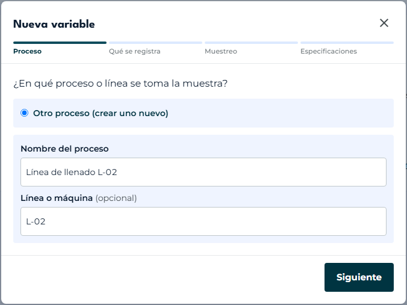
Qué se registra
Escribe el nombre de lo que vas a controlar (Peso neto) y elige cómo se registra cada unidad revisada:
- La mido: con un instrumento (peso, largo, temperatura). Es el caso del ejemplo.
- La clasifico buena o mala: cuentas cuántas unidades salen defectuosas.
- Cuento sus fallas: una unidad puede tener varias fallas (rayas, burbujas, manchas).
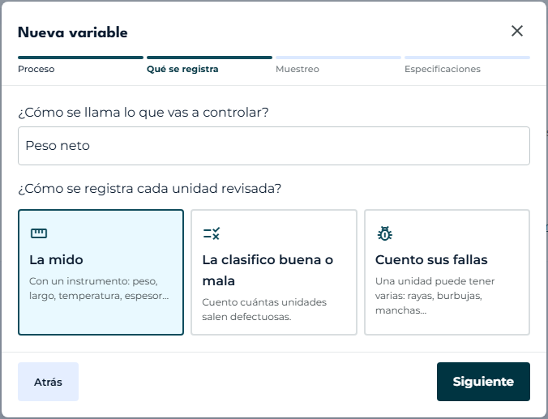
Cómo se muestrea
Indica cuántas unidades se miden cada vez (5) y cada cuánto se toma la muestra (30 min), la unidad de medida (g) y los decimales que muestra el instrumento. Con eso, CEP recomienda la gráfica y explica por qué.
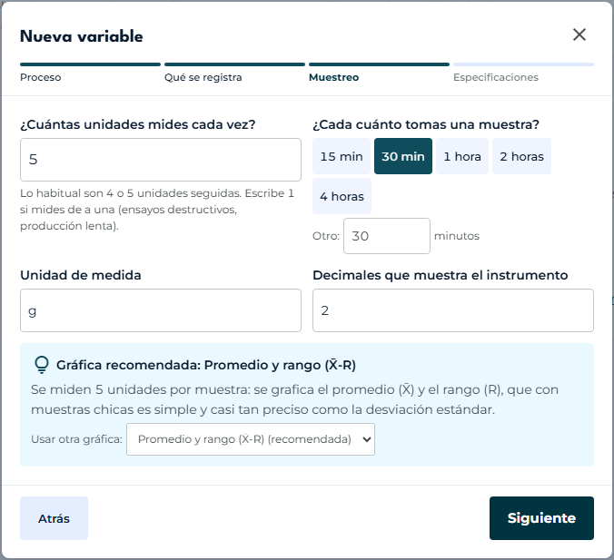
Lo habitual son 4 o 5 unidades seguidas. Usa 1 solo si cada medición es cara, lenta o destruye la pieza. Si no estás seguro, deja la gráfica recomendada.
Valores aceptados
Escribe el mínimo, el valor ideal y el máximo que acepta el cliente, la norma o el plano (495, 500 y 505 g). Si solo hay un límite, deja vacío el otro. Revisa el resumen y pulsa Crear variable.
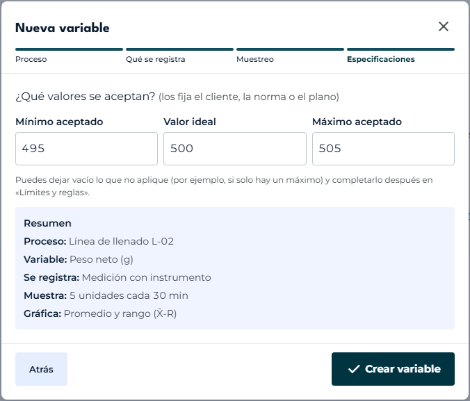
Listo
CEP confirma que la variable quedó creada. El siguiente paso es cargar las primeras muestras: con 20 a 25 se calculan los límites del proceso.
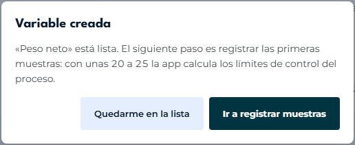
Mientras la variable no tenga muestras, en Variables a controlar aparece el botón Eliminar. Las especificaciones y los decimales se pueden cambiar después en Límites y reglas.
Tutorial 2 · Cargar los datos con la plantilla Excel
Para Ingeniería
Cargar de una vez las muestras de estabilización y de monitoreo, sin errores de escritura.
25 muestras para establecer los límites y 10 de monitoreo, de 5 unidades cada una.
5 minutos, más lo que tardes en llenar el Excel.
CEP genera un Excel a la medida del proceso: con las muestras ya numeradas y controles que no dejan escribir datos inválidos. Lo llenas (en el computador o impreso, a mano) y lo vuelves a subir.
Arma la plantilla
En Ingeniería›Plantilla de carga, elige el proceso y, en la fila de la variable, escribe cuántas muestras tendrá cada bloque:
- Para establecer los límites: las muestras de la Fase I. Se recomiendan 20 a 25.
- Monitoreo: las muestras que se compararán con los límites ya fijados (Fase II). Pueden ser 0 si todavía no las tienes.
Marca las columnas adicionales que quieras (lote, operario, observaciones) e indica la fecha y hora de la primera muestra: la plantilla sugiere la de cada una según la frecuencia. Pulsa Descargar plantilla.
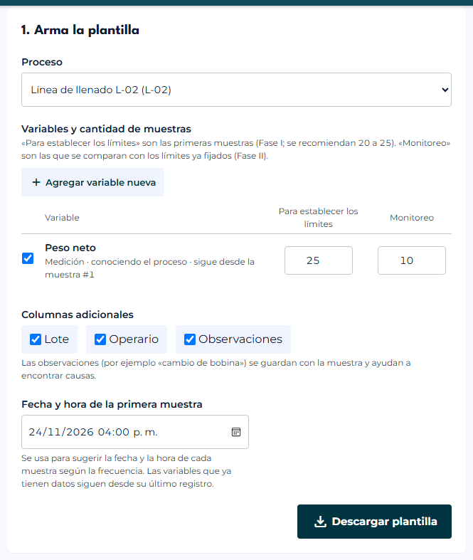
Abre el Excel y lee las instrucciones
La primera hoja explica cómo llenarla. Hay una hoja más por cada variable.
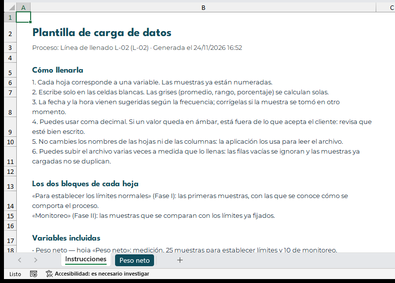
Escribe los valores
En la hoja de la variable, cada fila es una muestra: escribe un valor por unidad. El promedio y el rango se calculan solos.
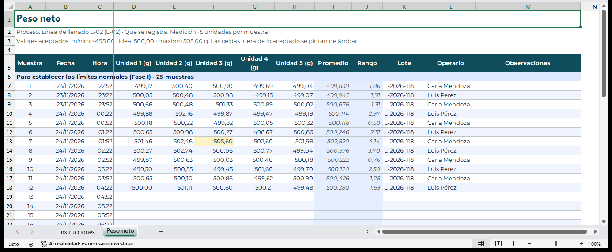
La plantilla te protege de los errores más comunes:
- Solo se puede escribir en las celdas blancas: números de muestra, fechas sugeridas y cálculos están bloqueados (sin contraseña).
- Si escribes texto donde va un número, Excel lo rechaza y muestra un aviso.
- Los valores fuera de lo aceptado se pintan de ámbar al escribirlos: revisa que estén bien escritos.
- En conteos, solo acepta enteros y no deja que las defectuosas superen a las revisadas.
Usa la columna Observaciones para lo que veas en la línea («boquilla goteando», «cambio de bobina»). Esa nota queda con la muestra y ayuda a explicar después las señales.
Súbela y revisa el informe
Guarda el Excel. En la misma pantalla, en 2. Sube la plantilla llenada, arrastra el archivo o haz clic para elegirlo. Todavía no se guarda nada: CEP muestra un informe de revisión.
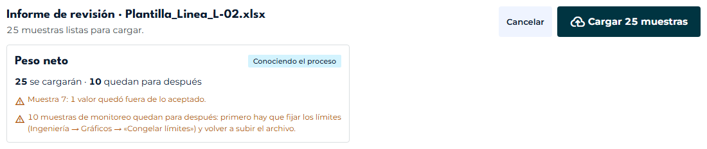
- Errores (en rojo): esa muestra no se carga. Por ejemplo, falta un valor o hay más defectuosas que revisadas. Corrígelos en el Excel y vuelve a subirlo.
- Avisos (en ámbar): la muestra se carga igual. Revisa que el valor esté bien escrito.
Carga las muestras
Pulsa Cargar 25 muestras. CEP confirma cuántas se cargaron y ofrece ver la gráfica.
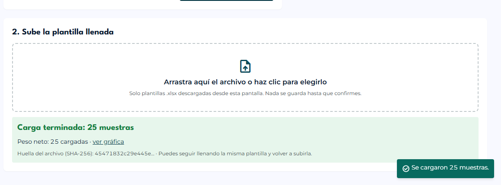
Porque las muestras de monitoreo se comparan con límites fijos, y esos límites todavía no existen. Primero hay que fijarlos (Tutorial 3). Después se sube el mismo archivo otra vez: las 25 ya cargadas no se duplican y entran las 10 de monitoreo.
Si los datos ya existen en un CSV o un Excel propio (por ejemplo, exportados de otro sistema), usa Datos y carga CSV.
Tutorial 3 · Fijar los límites del proceso
Para Ingeniería
Conocer cómo se comporta el proceso cuando funciona bien, descartar lo que tuvo una causa conocida y congelar los límites para empezar a vigilarlo.
20 a 25 muestras cargadas (Tutorial 2).
5 minutos.
Mira las gráficas
Ve a Ingeniería›Gráficos Variables. Arriba se ven los límites calculados con tus muestras; debajo, la gráfica de promedios y la de dispersión. Los puntos rojos con un código encima son señales: muestras que salieron del comportamiento habitual.
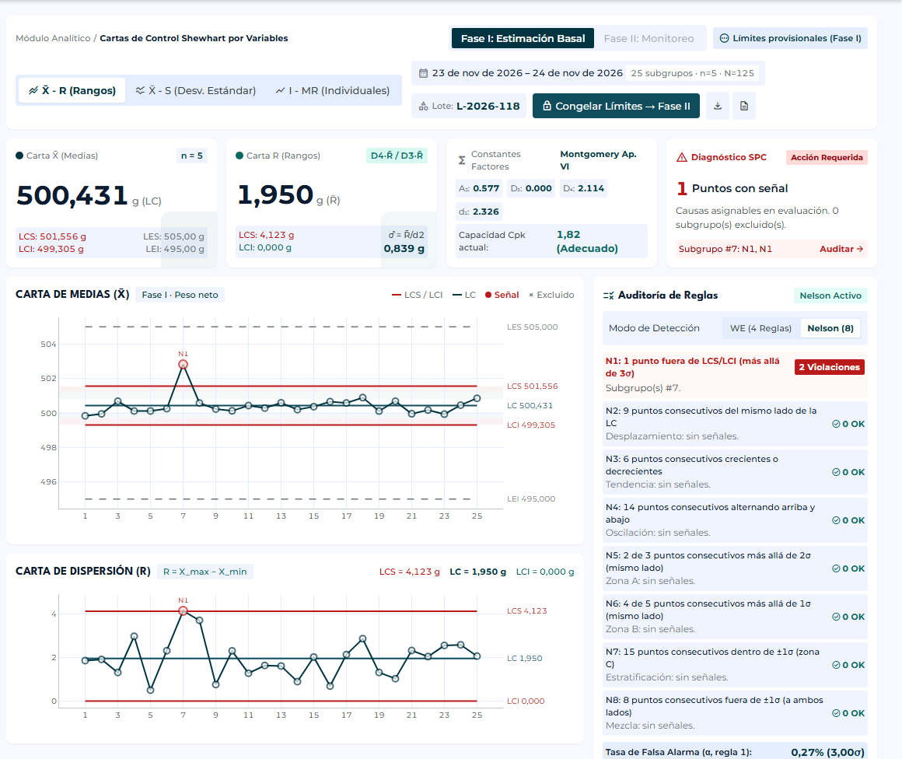
Averigua qué pasó en las muestras con señal
Pregunta en la planta o revisa las observaciones de la plantilla. En el ejemplo, la observación de la muestra 7 decía «Boquilla 3 goteando»: es una causa asignable.
No excluyas una muestra solo porque salió fuera de los límites. Si se excluyen sin motivo, los límites quedan más estrechos que la variación real y después aparecerán falsas alarmas.
Marca la muestra y mira la simulación
En la tabla Depuración de Subgrupos, marca la casilla Excluir de la muestra. Arriba a la derecha, la simulación muestra cómo cambiarían los límites y el Cpk, y si quedarían señales, antes de confirmar nada.
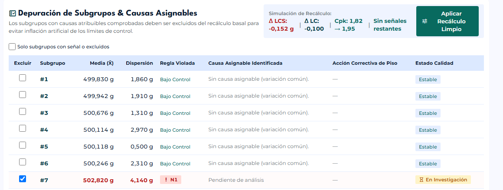
Aplica el recálculo y escribe la causa
Pulsa Aplicar Recálculo Limpio. Por cada muestra excluida se pide la causa (obligatoria) y la acción que se tomó. Queda en el historial.
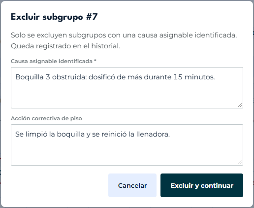
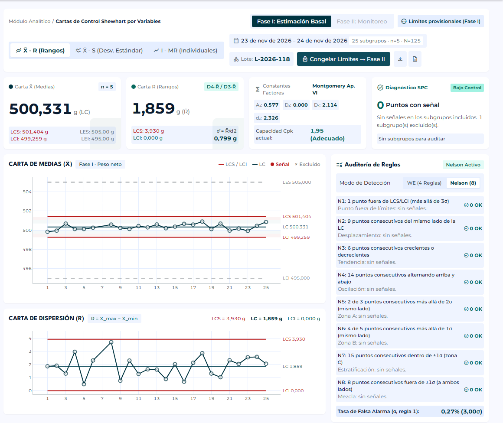
Congela los límites
Cuando no queden señales sin explicación, pulsa Congelar Límites → Fase II. La ventana dice con cuántas muestras se fijarán y pide un motivo.
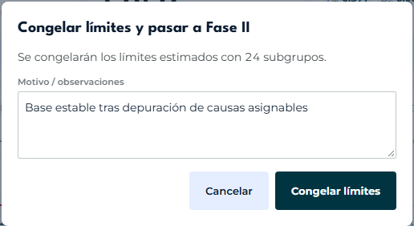
Desde ahora la variable está en monitoreo: cada muestra nueva se compara con estos límites y la vista Operario muestra el estado en verde, ámbar o rojo.
CEP avisa si quedan puntos con señal o si hay menos de 20 muestras. Deja continuar, pero los límites serán menos confiables.
Carga las muestras de monitoreo
Vuelve a Plantilla de carga y sube el mismo Excel. Ahora el informe dice que 10 se cargarán y 25 ya estaban cargadas. Pulsa Cargar 10 muestras.
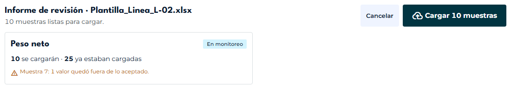
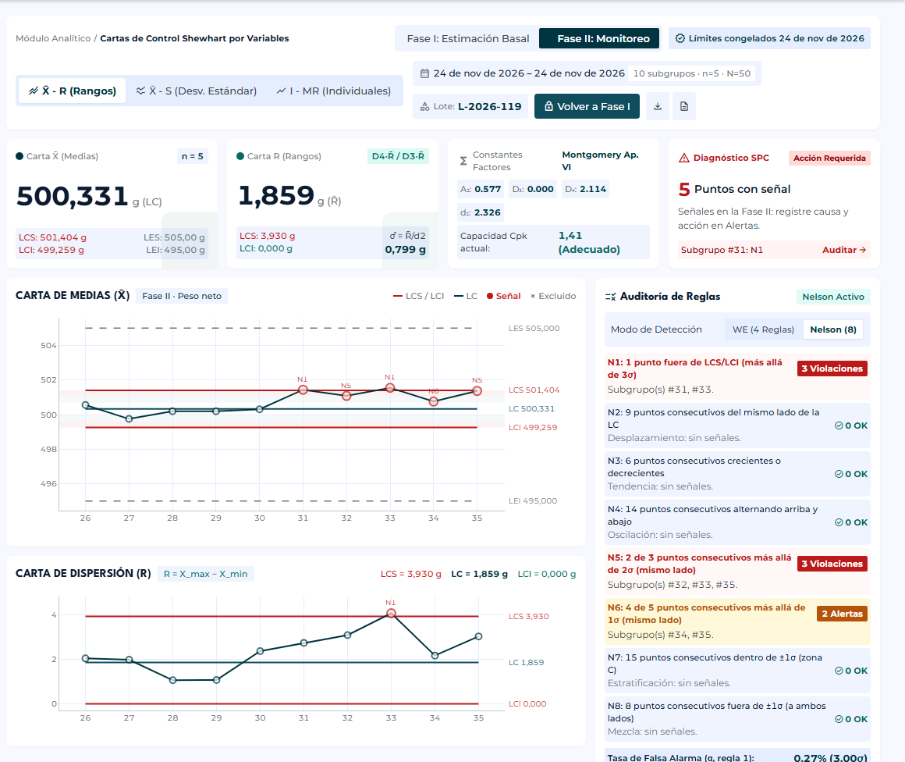
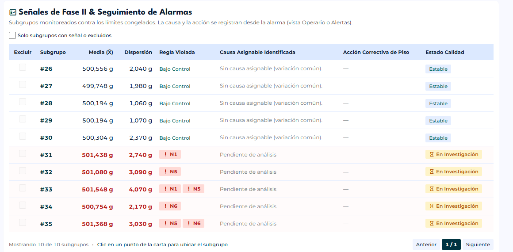
Si cambió la máquina, el proveedor o el método, pulsa Volver a Fase I en la misma pantalla. Se pide un motivo y se elige la nueva base: conservar la anterior o usar las muestras de monitoreo. Los límites anteriores quedan en el historial.
Tutorial 4 · Registrar muestras en la planta
Para el personal de planta
Registrar cada muestra a tiempo, saber al instante si está bien y corregir un error de escritura.
Que el ingeniero haya creado la variable. Tu nombre en el encabezado.
Menos de un minuto por muestra.
Todo se hace en la vista Operario, pantalla Registrar muestra. Antes de empezar, pulsa tu nombre arriba a la derecha y escríbelo: queda registrado en cada muestra y cada alerta.
La pantalla de registro
- Estado y qué hacer. La frase dice qué hacer en ese momento.
- Próxima muestra. Cuenta regresiva; dice «¡Ahora!» cuando toca, o avisa si está atrasada.
- Reportar un problema. Para avisar de una parada, un lote retenido o algo raro.
- Formulario. Un campo por unidad, más el lote (opcional).
- Guardar muestra.
- Últimas muestras. El promedio de cada una sobre la zona normal.
- Resumen. Unidades dentro de lo aceptado, promedio y muestras para revisar.
- Modo demostración. Solo aparece si el ingeniero lo activó.
Registrar una muestra paso a paso
Mira el estado y la próxima muestra
La franja de arriba dice si el proceso va bien y cuándo toca la próxima muestra. Cuando dice «¡Ahora!», toma las unidades.
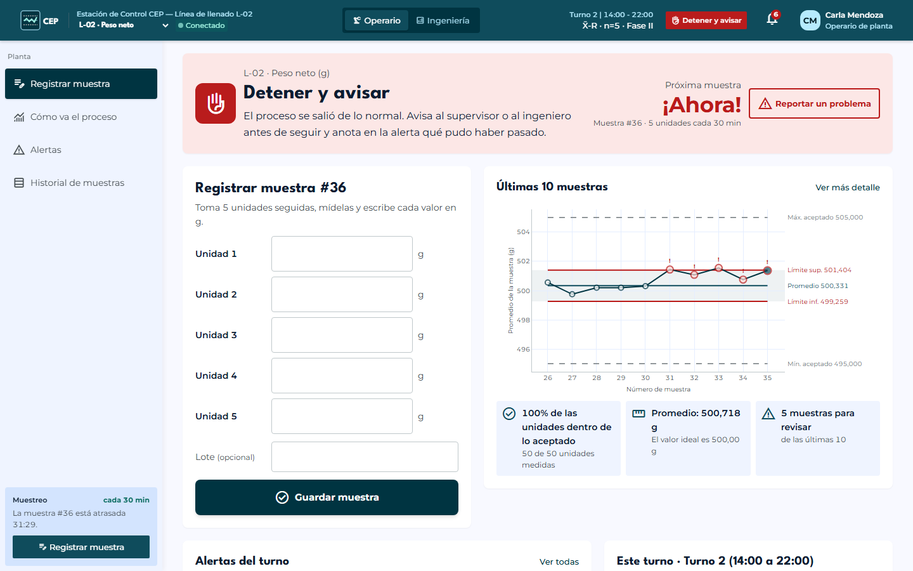
Escribe los valores
Mide las unidades en el orden en que las tomaste y escribe cada valor. Puedes usar coma o punto decimal; Enter pasa al siguiente campo. Mientras escribes, abajo aparece el resultado en vivo.
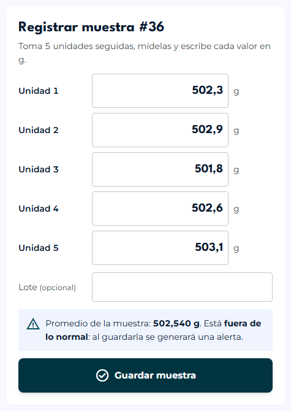
Guarda
Pulsa Guardar muestra. Un mensaje confirma el número de muestra. Si salió fuera de lo normal, el mensaje es rojo, se crea una alerta y el estado cambia.
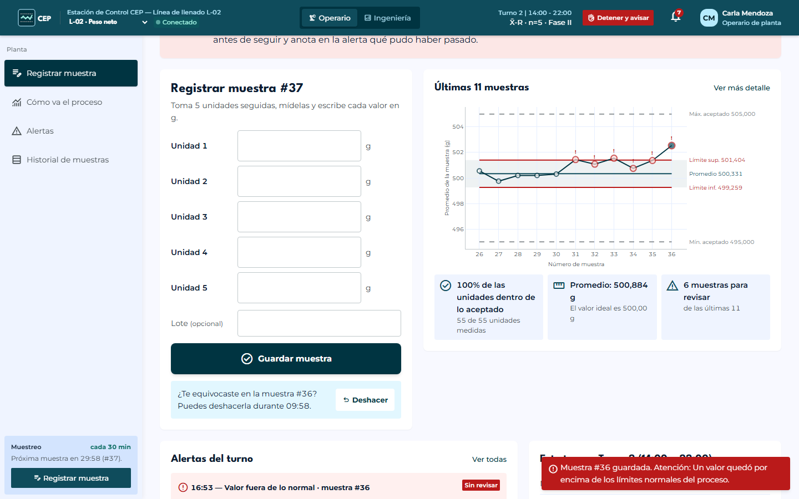
Si la muestra salió así, es información valiosa. Anota en la alerta qué pasó (ver Entender y atender las alertas).
Turnos: empezar y terminar
La cuenta regresiva de la próxima muestra solo corre durante un turno. Fuera de turno (de noche, el domingo, en una parada larga) CEP no marca muestras atrasadas. El ingeniero define los turnos de la planta (por ejemplo Mañana, Tarde y Noche) con sus horas y sus días de trabajo.
- El turno empieza solo a su hora de inicio, y termina solo a su hora de fin. Cada turno queda con un número (#1, #2, #3…) y cada muestra registrada queda unida a su turno.
- La primera muestra no se pide al instante: toca un intervalo de muestreo después del inicio (o los minutos que haya fijado el ingeniero), para dar tiempo a que salga producto.
- Si el turno termina antes, pulsa Terminar turno, debajo de Reportar un problema. La cuenta regresiva se detiene. Para volver a empezar, pulsa Iniciar turno y elige cuál.
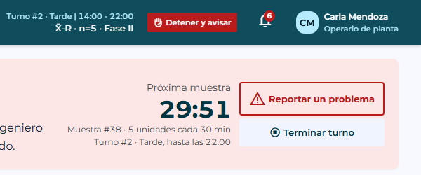
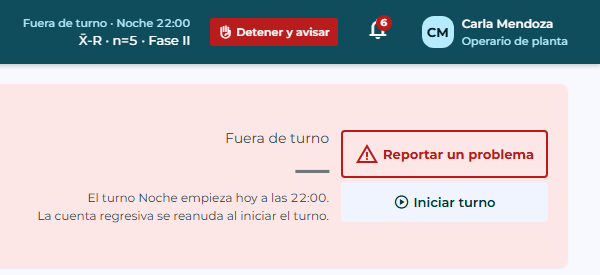
Si guardas una muestra sin un turno abierto, CEP avisa antes. Volver te deja iniciar el turno primero; Guardar igual la registra como sin turno.
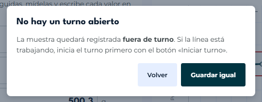
El encabezado muestra el turno en curso, el recuadro Este turno resume sus muestras y alertas, y el Historial de muestras tiene una columna Turno.
Si te equivocas
Un valor mal escrito
Si un valor está muy lejos de lo habitual (por ejemplo 5000 en lugar de 500,0), CEP pregunta antes de guardar. Corregir vuelve al formulario; Sí, están bien guarda igual.
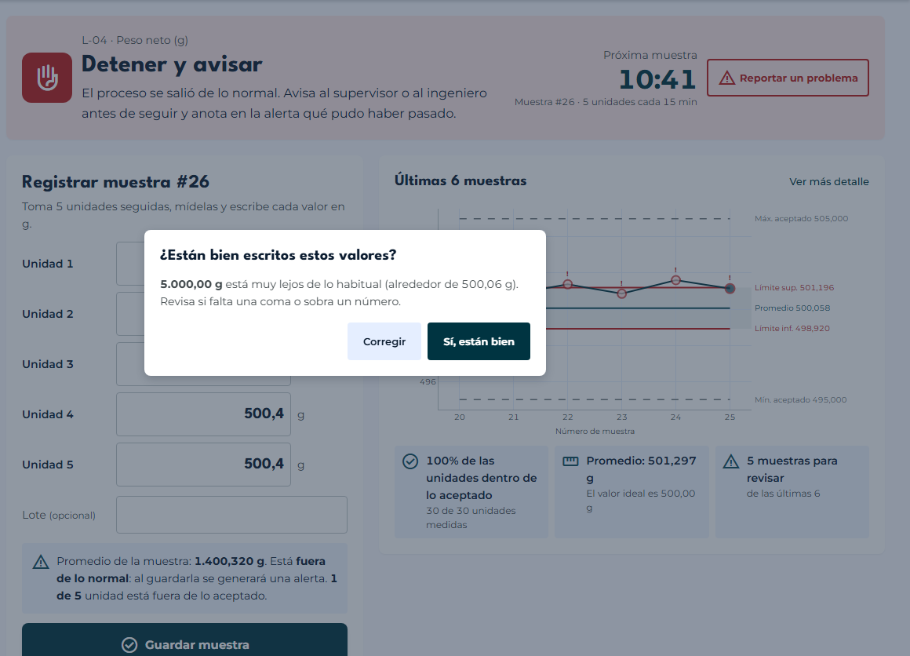
Deshacer la última muestra
Durante 10 minutos después de guardar aparece «¿Te equivocaste en la muestra #36? Puedes deshacerla» con el botón Deshacer. Se pide un motivo opcional; la muestra no se borra, queda anulada en el historial, y sus valores vuelven al formulario para corregirlos.
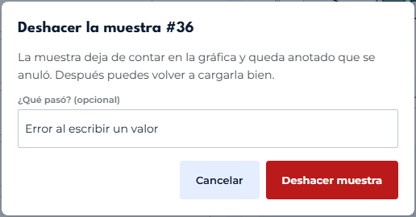
Avisa al ingeniero. Mientras el proceso está en Fase I, puede excluir esa muestra indicando la causa.
Reportar un problema
Si se detiene la máquina, retienes un lote o ves algo raro, pulsa Reportar un problema, elige qué pasó y descríbelo brevemente. Se crea una alerta manual.
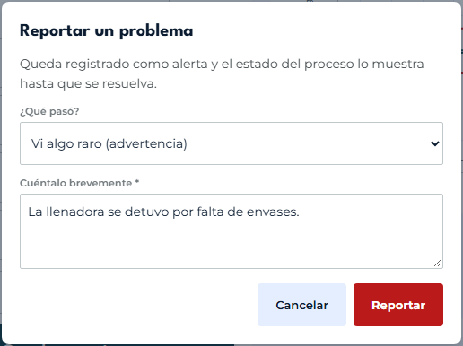
Hasta que esa alerta se resuelva, el proceso muestra Detener y avisar.
Ver lo que se registró
La pantalla Historial de muestras lista todas las muestras, de la más reciente a la más antigua, con sus valores, promedio, quién la registró, el lote y si quedó Normal o Para revisar. La lista de arriba filtra por etapa (Fase I, Monitoreo, Archivadas, Anuladas) y Descargar CSV la guarda para abrirla en Excel.
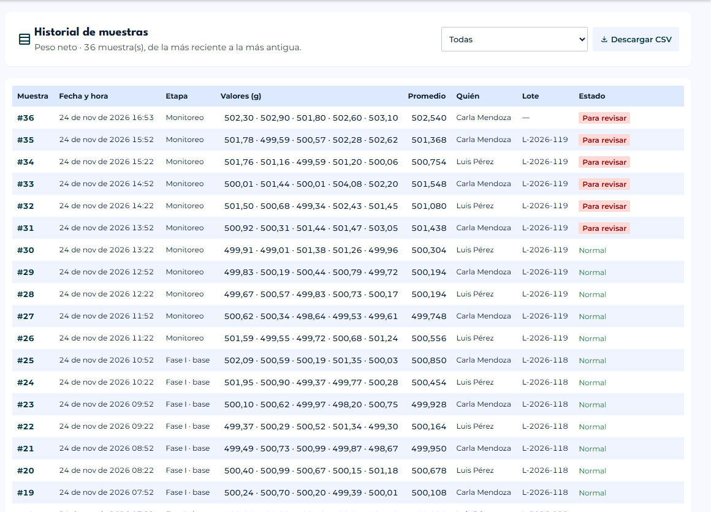
Entender y atender las alertas
Para todos
Una alerta es el aviso de CEP de que una muestra no se comportó como de costumbre. No siempre significa producto malo: significa que algo cambió y conviene averiguar qué.
Dónde aparecen
- En la campana del encabezado, con el número de alertas sin resolver.
- En el estado del proceso: ámbar si hay alertas sin resolver, rojo si alguna es grave.
- En Alertas del turno, debajo del formulario de registro.
- En la pantalla Alertas, con todas las de la variable.
Qué significa cada alerta
Cada alerta tiene un título corto, una explicación en palabras y, en letra pequeña, el código de la regla que la generó. El dibujo muestra el patrón que la dispara.
Un promedio quedó por encima o por debajo de los límites normales. Algo distinto pasó en esa muestra.
Qué hacer: detener y avisar; revisar la máquina, el material y la medición de esa muestra.
Las unidades de una misma muestra son demasiado distintas entre sí.
Qué hacer: revisar piezas sueltas, desgaste, una boquilla o un cabezal que falla.
2 de los últimos 3 valores quedaron muy cerca del límite, del mismo lado.
Qué hacer: es un aviso temprano de corrimiento; revisar el ajuste antes de que salga producto fuera.
Muchos valores seguidos quedaron del mismo lado del promedio.
Qué hacer: buscar un cambio reciente: lote de material, turno, ajuste o calibración.
6 valores seguidos suben (o bajan) uno tras otro.
Qué hacer: algo se desgasta, se calienta o se desajusta poco a poco; revisar antes de que salga del límite.
4 de los últimos 5 valores quedaron alejados del promedio, del mismo lado.
Qué hacer: observar las próximas muestras; puede ser el comienzo de un corrimiento.
14 valores seguidos alternan arriba y abajo.
Qué hacer: puede haber dos máquinas, turnos u operarios mezclados en las muestras.
15 valores seguidos quedaron muy pegados al promedio.
Qué hacer: avisar al ingeniero; suele indicar que los límites o la forma de medir no son los adecuados.
8 valores seguidos quedaron lejos del promedio, a uno y otro lado.
Qué hacer: revisar si se juntan unidades de dos fuentes (dos líneas, dos moldes).
Las crea una persona con Reportar un problema. Las dos primeras son graves; «Vi algo raro» es una advertencia.
Qué hacer: resolverlas cuando el problema esté atendido.
En Ideas clave hay un explorador interactivo: eliges un patrón y una carta de ejemplo muestra qué puntos marcaría CEP.
Gravedad y color
| Gravedad | Cómo se ve | Efecto en el estado |
|---|---|---|
| Grave | Tarjeta roja con un círculo de exclamación. | Detener y avisar mientras no se resuelva. |
| Advertencia | Tarjeta ámbar. | . |
| Alerta | Tarjeta azul con una «i». | . |
Atender una alerta paso a paso
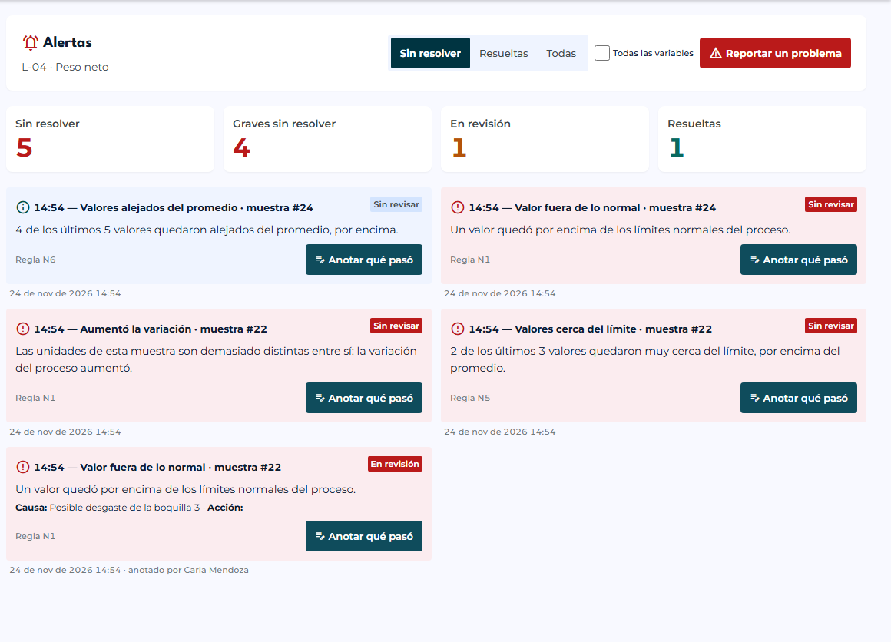
- Filtros. Sin resolver, Resueltas o Todas.
- Todas las variables. Muestra las alertas de todos los procesos.
- Reportar un problema.
- Contadores. Sin resolver, graves, en revisión y resueltas.
- La alerta. Hora, título, número de muestra y explicación.
- Estado. Sin revisar, En revisión o Resuelta.
- Anotar qué pasó.
Lee la explicación
Dice qué pasó en palabras simples y en qué muestra. Si hace falta, mira la muestra en Cómo va el proceso.
Revisa la máquina y averigua la causa
Observa el proceso, el material, el instrumento de medición. Si es grave, avisa al supervisor o al ingeniero antes de seguir.
Anota qué pasó
Pulsa Anotar qué pasó, escribe la causa (si la sabes) y lo que se hizo, y elige el estado:
- En revisión: todavía estás averiguando. El estado del proceso no cambia.
- Resuelta: ya sabes la causa y se tomó una acción. Exige causa y acción.
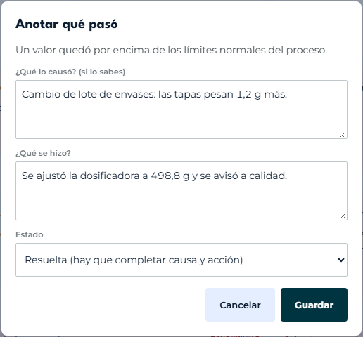
Comprueba el resultado
La alerta pasa a Resuelta, muestra la causa, la acción y quién la anotó, y el contador baja. Cuando no quedan alertas graves, el estado deja de estar en rojo.
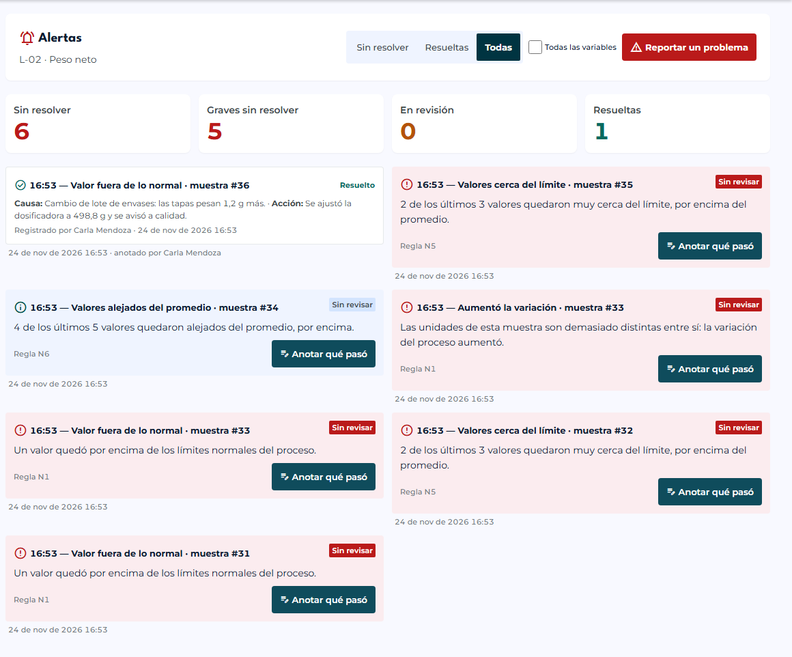
Las causas y acciones aparecen después en las gráficas de Ingeniería y en los informes. Una buena nota dice qué se vio, qué se cambió y quién lo hizo.
Ver la evolución: Cómo va el proceso
La pantalla Cómo va el proceso muestra la gráfica en grande, una guía para leerla y la lista de muestras para revisar con su explicación.
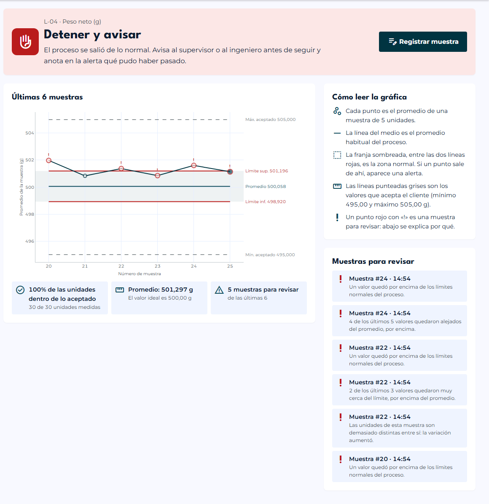
- La gráfica. Cada punto es el promedio de una muestra.
- Zona normal. La franja entre las líneas rojas. Un punto fuera genera una alerta.
- Valores aceptados. Líneas grises punteadas.
- Punto para revisar. Rojo, con «!» encima.
- Cómo leer la gráfica.
- Muestras para revisar. Cada una con su razón.
- Resumen.
Tutorial 5 · Revisar la capacidad y generar el informe
Para Ingeniería
Saber si el proceso cumple lo que pide el cliente y entregar un informe que cualquiera puede leer.
La variable con valores aceptados y sus límites fijados.
3 minutos.
Revisar la capacidad
Ve a Ingeniería›Capacidad. Arriba aparece el veredicto en una frase; debajo, los índices y el detalle.
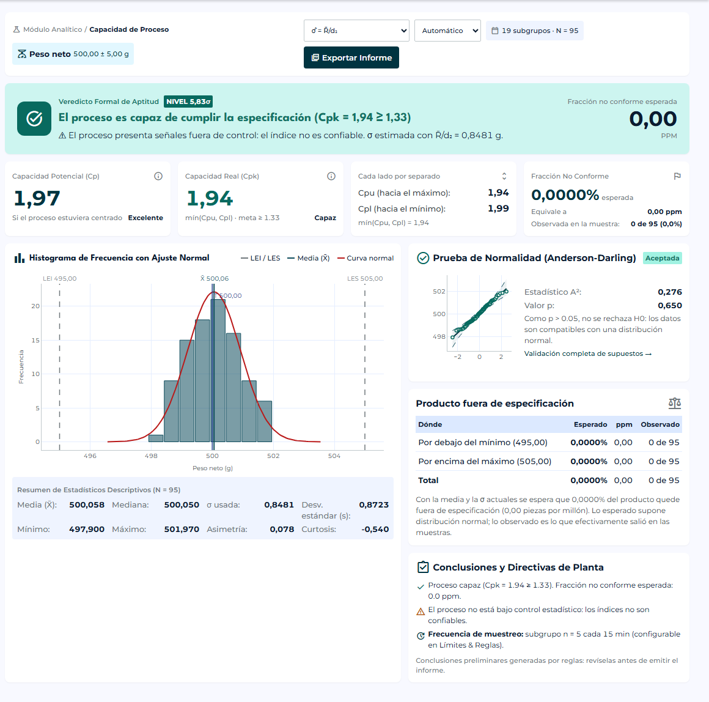
- Cómo se estima σ. Con los rangos, las desviaciones, los rangos móviles o la σ fijada por el ingeniero.
- Datos. Automático usa la Fase II si tiene al menos 20 muestras; si no, la Fase I.
- Veredicto. Capaz, marginal o no capaz.
- Cp. Cuánto cabe la variación en la tolerancia, si el proceso estuviera centrado.
- Cpk. Lo mismo, considerando dónde está el promedio.
- Cpu y Cpl. Cada lado por separado.
- Fracción no conforme. Esperada (% y piezas por millón) y observada.
- Histograma con mínimo, máximo, promedio y curva normal.
- Producto fuera de especificación, por debajo y por encima.
- Conclusiones automáticas para revisar.
| Cpk | Veredicto | Qué significa |
|---|---|---|
| 1,33 o más | Capaz | El proceso cumple con margen. |
| Entre 1,00 y 1,33 | Cumple, pero cualquier cambio puede sacar piezas de especificación. | |
| Menos de 1,00 | No capaz | Se fabrica producto fuera de lo aceptado aunque el proceso esté estable. |
Si el proceso tiene señales sin resolver, CEP advierte que los índices no son confiables. Atiende las alertas o depura la Fase I antes de interpretarlos.
Detalle técnico
Cp = (LES − LEI) / 6σ; Cpu = (LES − μ) / 3σ; Cpl = (μ − LEI) / 3σ; Cpk = mín(Cpu, Cpl). La fracción esperada supone distribución normal; por eso conviene compararla con la observada y revisar los supuestos.
Generar el informe
Elige qué informe quieres
En Ingeniería›Reportes y Auditoría, elige la plantilla del reporte: Integral (todo), Capacidad y supuestos, Control en proceso (gráficas y alertas) o Trazabilidad (historial de cambios). Debajo puedes marcar o desmarcar capítulos.
Previsualiza
Pulsa Generar y Previsualizar: a la derecha aparece la primera página tal como saldrá.
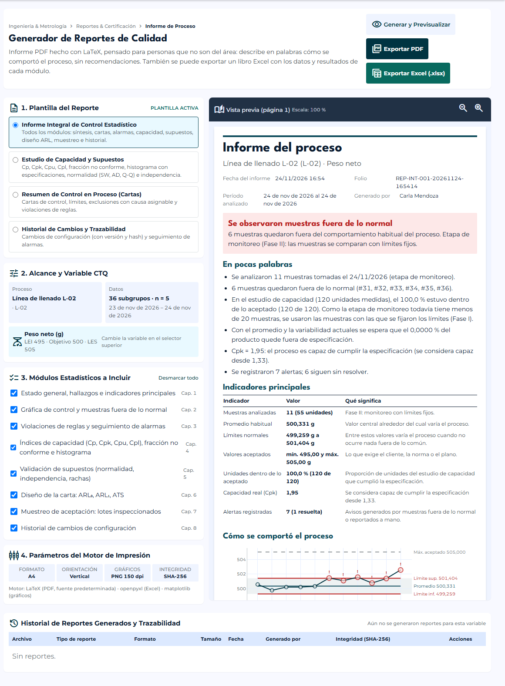
Exporta
Pulsa Exportar PDF o Exportar Excel (.xlsx) y elige dónde guardarlo. Además queda una copia en la carpeta reportes y una fila en el historial de reportes.
Cómo es el informe PDF
Está escrito para lectores que no son del área y solo describe lo que pasó, sin recomendaciones: el estado en una frase, un resumen «En pocas palabras», los indicadores con su significado, la gráfica con una guía de lectura, las muestras fuera de lo normal, el cumplimiento de la especificación, la verificación de los datos, el plan de muestreo, las alertas, el historial de cambios, un anexo técnico y un glosario.
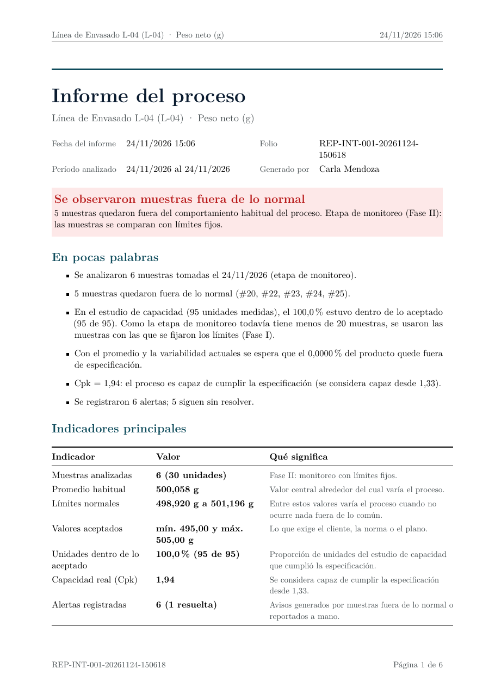

En el historial de reportes, la verificación recalcula la huella SHA-256 del archivo y la compara con la registrada al generarlo. Si alguien cambió el archivo, no coincide.
Si el equipo no tiene MiKTeX, el PDF se genera con un formato alternativo con los mismos textos y la pantalla lo avisa.
Referencia de las demás pantallas
Para Ingeniería
Lo que no apareció en los tutoriales: cada pantalla de Ingeniería explicada parte por parte.
Gráficos por variables, en detalle
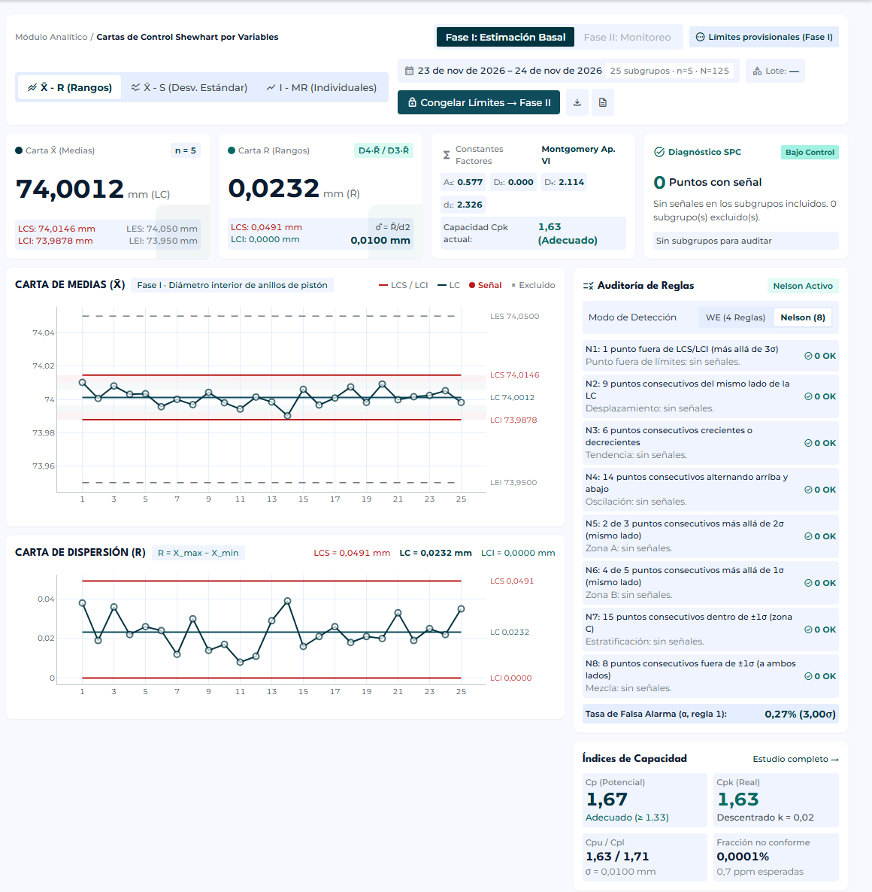
- Etapa. Fase I o Fase II, y si los límites son provisionales o están congelados.
- Tipo de gráfica. X̄-R, X̄-S o I-MR. Solo se cambia en Fase I.
- Congelar límites (en Fase II, Volver a Fase I).
- Exportar gráficos como imagen y abrir el reporte técnico.
- Tarjetas. Línea central y límites de cada gráfica, constantes y σ estimada.
- Diagnóstico. Cuántos puntos tienen señal; Auditar lleva al primero.
- Gráfica de promedios, con franjas a 1 y 2 σ que usan algunas reglas.
- Gráfica de dispersión (R, S o MR).
- Auditoría de reglas. Cambia entre WE (4) y Nelson (8).
- Índices de capacidad resumidos.
Al hacer clic en un punto de la gráfica, la tabla de abajo salta a esa muestra.
Gráficos por atributos
Funciona igual, para las variables que se cuentan:
| Gráfica | Cuándo se usa |
|---|---|
| p | Porcentaje de unidades defectuosas; el tamaño de muestra puede variar. |
| np | Cantidad de unidades defectuosas, con tamaño de muestra constante. |
| c | Cantidad de fallas por muestra, cuando la muestra es siempre igual. |
| u | Fallas por unidad, cuando el tamaño de la muestra cambia. |

Al final de la pantalla, un asistente recomienda la gráfica con tres preguntas: qué se registra, si el tamaño de muestra es constante y si se prefiere ver una proporción o un conteo.
Validación de supuestos
Las gráficas de control dan por hecho que las mediciones siguen aproximadamente una distribución normal y que cada una no depende de la anterior. Esta pantalla lo comprueba.
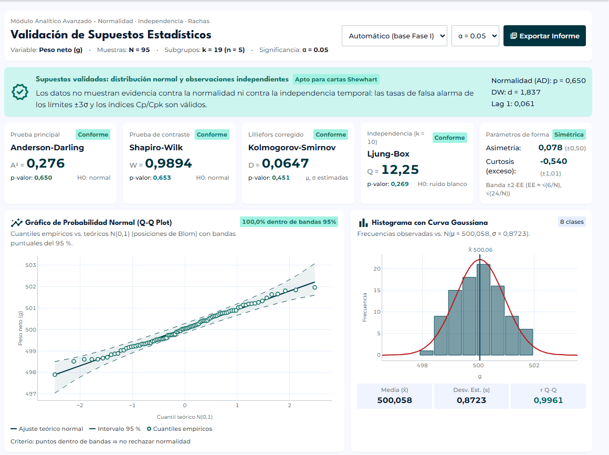
- Veredicto: una frase en verde si todo se cumple, en ámbar si hay observaciones.
- Normalidad: Anderson-Darling, Shapiro-Wilk y Lilliefors. Si el p-valor es mayor que α, dice Conforme.
- Gráfico Q-Q: si los puntos siguen la recta dentro de las bandas, los datos son compatibles con la normal.
- Independencia: en el correlograma, las barras deben quedar dentro de las líneas rojas; Durbin-Watson cerca de 2 indica independencia.
- Box-Cox: si la normalidad se rechaza, indica qué transformación la corregiría.
Si el instrumento mide con poca resolución (por ejemplo, gramos enteros), muchos valores se repiten y las pruebas pueden rechazar la normalidad aunque el proceso sea normal; en el gráfico Q-Q se ven escalones. Revisa entonces si los datos son simétricos y si el Q-Q sigue la recta en general.
Plan de muestreo
Ayuda a decidir cuántas unidades revisar y cada cuánto, buscando equilibrio entre detectar rápido los problemas, evitar falsas alarmas y no recargar al personal.

- Unidades por muestra. Más unidades detectan antes los cambios pequeños.
- Cada cuánto se toma la muestra.
- Qué tan estrictos son los límites. Más sensible (2,5σ), estándar (3σ) o más tolerante (3,5σ).
- Variabilidad (σ). Calculada o fijada según el criterio del ingeniero.
- Cambio a detectar.
- Comparación. Tiempo para detectar, falsas alarmas y unidades por turno.
- Explicación en palabras.
- Guardar este plan. Pide un motivo.
- Detalle técnico. Curva ARL, tabla y simulación.
Los límites se recalculan con el centro y la σ congelados. Si cambia el número de unidades por muestra, las muestras de monitoreo tomadas con el tamaño anterior pasan al archivo.
Carga muestral y potencia
Debajo del plan, la sección Carga muestral y potencia responde: si reviso más unidades por hora, ¿cuánto antes detecto un cambio, y conviene más tomar muestras más grandes o más seguidas? La carga muestral es n ÷ intervalo; por ejemplo, 5 unidades cada 30 min son 10 unidades por hora.
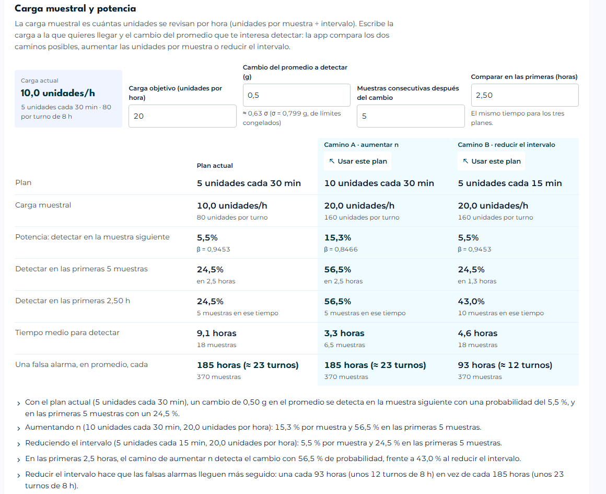
- Escribe la carga objetivo en unidades por hora. CEP arma dos caminos: A, aumentar las unidades por muestra con el mismo intervalo, y B, mantener las unidades y tomar muestras más seguido.
- Escribe el cambio del promedio a detectar en la unidad de la variable (por ejemplo, 2 mL). CEP lo traduce a σ. El cambio vale hacia arriba o hacia abajo.
- Elige cuántas muestras consecutivas mirar después del cambio (5 por defecto) y el horizonte en horas para comparar los tres planes en el mismo tiempo.
- Lee la tabla. El valor más favorable de cada fila aparece resaltado:
- Potencia: probabilidad de detectar el cambio en la primera muestra después de que ocurre.
- Detectar en las primeras m muestras y en las primeras T horas.
- Tiempo medio para detectar y cada cuánto aparece una falsa alarma.
- Si te convence un camino, pulsa Usar este plan: pasa al plan propuesto de arriba, donde lo revisas y lo guardas con Guardar este plan.
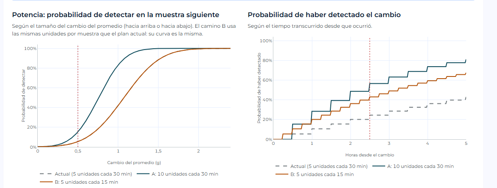
En el camino B, «las primeras 5 muestras» pasan en menos tiempo que en el plan actual. Por eso la tabla también compara en un mismo horizonte de horas. Para cambios pequeños suele convenir aumentar n; reducir el intervalo además hace que las falsas alarmas lleguen más seguido.
Detalle técnico
δ = cambio / σ; β = Φ(k − δ√n) − Φ(−k − δ√n); potencia = 1 − β; detectar en m muestras = 1 − βᵐ; en T horas = 1 − β⌊T/h⌋; ATS₁ = h / (1 − β); ATS₀ = h / α con α = 2Φ(−k). Se supone que el cambio ocurre justo después de una muestra. Disponible para cartas X̄ e I; con valores individuales solo existe el camino de reducir el intervalo.
Muestreo de aceptación
Para decidir si se acepta o se rechaza un lote (por ejemplo, de materia prima) revisando solo una muestra: se revisan n unidades y se acepta si hay como máximo c defectuosas.
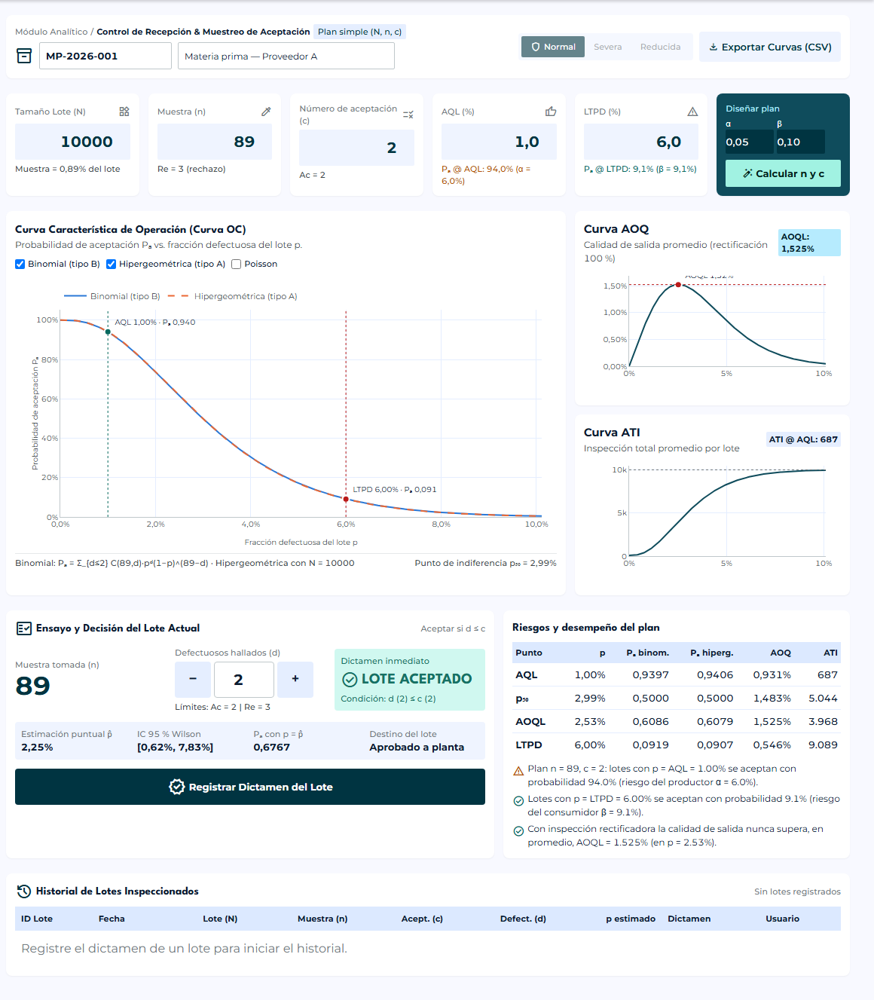
- Escribe el tamaño del lote N, la muestra n, el número de aceptación c, el AQL y el LTPD, o deja que CEP lo diseñe con Calcular n y c a partir de los riesgos α y β.
- Revisa la curva OC (probabilidad de aceptar según la calidad), la AOQ y la ATI.
- Indica los defectuosos hallados con − y +: aparece el dictamen. Registrar Dictamen del Lote lo guarda en el historial.
Datos y carga CSV
Para importar archivos que ya existen (CSV, TXT, DAT o Excel propio).
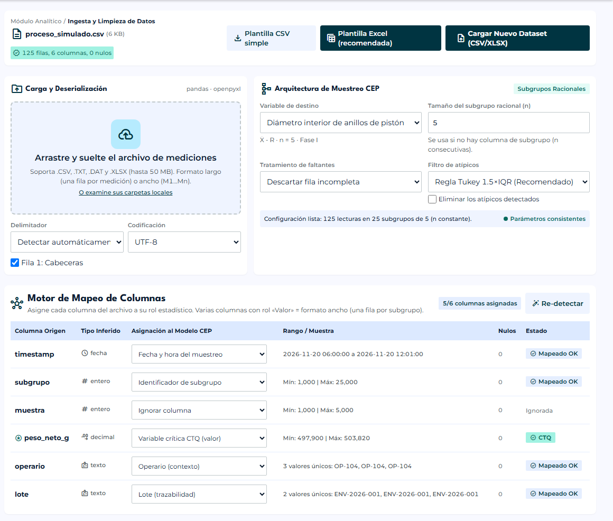
- Pulsa Cargar Nuevo Dataset o arrastra el archivo. El delimitador, la codificación y los encabezados se detectan solos.
- Revisa el rol de cada columna: fecha y hora, identificador de subgrupo, valor, operario, lote o ignorar.
- Elige la variable de destino y, si no hay columna de subgrupo, el tamaño n.
- Elige cómo tratar faltantes y atípicos, revisa la vista previa y pulsa Guardar Mapeo e Importar a la Variable.
Si la variable ya está en Fase II, la pantalla dice «no admite importación»: usa la plantilla o la vista Operario.
Límites y reglas
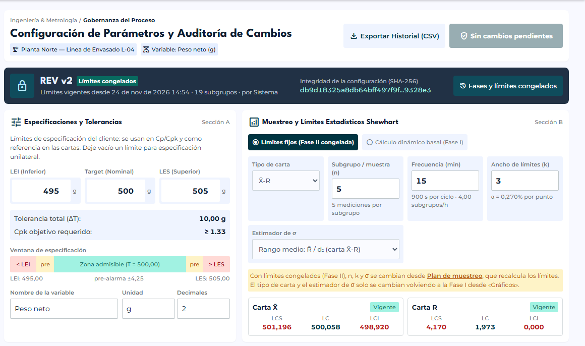
- Especificaciones: mínimo, ideal y máximo; nombre, unidad y decimales.
- Muestreo y límites: tipo de gráfica, tamaño de muestra, frecuencia, ancho de los límites y estimador de σ. Con límites congelados, varios se cambian desde el plan de muestreo.
- Al cambiar algo, pulsa Guardar nueva revisión: pide una justificación y aumenta la versión.

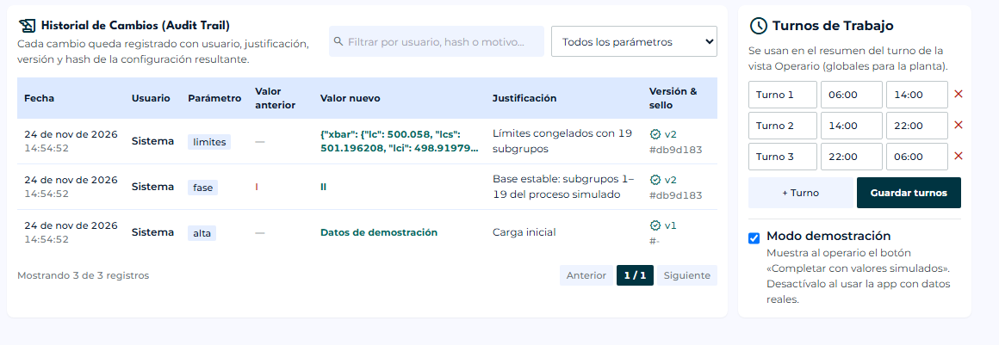
Turnos de trabajo
El recuadro Turnos de trabajo define el horario de la planta, común a todas las variables:
- Nombre, inicio y fin (24 horas). Un turno puede cruzar la medianoche, por ejemplo Noche de 22:00 a 06:00.
- Días de trabajo: pulsa L M X J V S D para activarlos o desactivarlos. Un día apagado no abre ese turno.
- Primera muestra a los … min: cuánto esperar desde el inicio antes de pedir la primera muestra. Vacío (auto) es un intervalo de muestreo de cada variable.
- + Turno agrega otro y Guardar turnos guarda el horario (queda en el historial de cambios). Dos turnos no pueden superponerse el mismo día.
- Turno actual muestra el turno abierto con Terminar turno, o el próximo con Iniciar turno. Debajo, Historial de turnos lista cada turno con sus horas reales, sus muestras y cómo terminó.
Base de datos y respaldos
- Respaldar ahora guarda una copia. Además, CEP hace una cada vez que se abre (las últimas 20).
- Descargar una copia guarda la base completa en un archivo .db, para archivarla o llevarla a otro equipo.
- En la lista de respaldos, Volver a este recupera una copia; Elegir archivo .db restaura una descargada antes.
- Cargar demostración aparece solo con la base vacía.
Se pierde lo registrado después, en todos los procesos. Antes, CEP guarda una copia de la base actual, así que siempre se puede deshacer.
Problemas frecuentes
Para todos
Pulsa una pregunta para ver la respuesta.
Windows muestra «Windows protegió su PC» al instalar.
Pulsa Más información y Ejecutar de todas formas. Aparece porque el instalador no tiene firma digital.
CEP tarda en abrir.
La primera vez puede tardar hasta un minuto mientras Windows revisa el programa. Las siguientes, unos segundos.
Dice «CEP ya está abierto en este equipo».
Ya hay una ventana abierta: búscala en la barra de tareas.
Escribí mal un valor y ya guardé la muestra.
Durante 10 minutos, usa Deshacer. Después, avisa al ingeniero: en Fase I puede excluirla indicando la causa.
La próxima muestra aparece «atrasada».
Ya pasó el tiempo de la frecuencia desde la última muestra. Regístrala, o pide al ingeniero que revise la frecuencia en el plan de muestreo.
El estado está en rojo y no sé por qué.
Abre Alertas: hay alguna grave sin resolver. Anota la causa y la acción y márcala como resuelta (ver Atender una alerta).
No puedo marcar una alerta como resuelta.
Para resolverla hacen falta la causa y la acción. Si todavía no sabes la causa, déjala En revisión.
Subí la plantilla y las muestras de monitoreo no se cargaron.
Es lo esperado mientras la variable está en Fase I. Congela los límites (Tutorial 3) y vuelve a subir el mismo archivo.
El informe de revisión muestra errores en rojo.
Esas muestras no se cargan. Corrige el Excel (falta un valor, más defectuosas que revisadas…) y vuelve a subirlo: las ya cargadas no se duplican.
Quiero cambiar el tipo de gráfica y no me deja.
Solo se cambia en Fase I. Si los límites ya están congelados, primero usa Volver a Fase I.
No puedo eliminar una variable.
Solo se eliminan variables sin muestras, para no perder la trazabilidad.
Quiero empezar de cero o quitar lo que cargué.
En Base de datos y respaldos, usa Volver a este en un respaldo anterior. Afecta a todos los procesos.
La validación de supuestos rechaza la normalidad.
Revisa si los datos están redondeados (escalones en el gráfico Q-Q) y si son simétricos. Ver Validación de supuestos.
La capacidad dice que los índices no son confiables.
El proceso tiene señales sin resolver. Atiende las alertas o depura la Fase I antes de interpretar los índices.
El PDF dice que se usó el formato alternativo.
El equipo no tiene LaTeX. Instala MiKTeX si quieres ese formato; el contenido es el mismo.
Quiero pasar los datos a otro computador.
En el equipo de origen, Descargar una copia. En el de destino, con CEP instalado, Elegir archivo .db.
Glosario
Para todos
- Alerta
- Aviso que genera CEP cuando una muestra cumple una regla de detección, o que crea una persona al reportar un problema.
- AOQ y AOQL
- Calidad media que sale después de inspeccionar los lotes, y su valor máximo.
- AQL
- Nivel de calidad aceptable: el porcentaje defectuoso con el que un lote debería aceptarse casi siempre.
- ARL y ATS
- Cuántas muestras (ARL) o cuánto tiempo (ATS) tarda, en promedio, la gráfica en dar una señal.
- ATI
- Cantidad media de unidades inspeccionadas por lote.
- Causa asignable
- Causa identificable de una variación anormal: un ajuste, un material, un error. Se opone a la causa común, la variación natural del proceso.
- Cp, Cpk, Cpu, Cpl
- Índices de capacidad: comparan la variación del proceso con la tolerancia. Cpk considera además dónde está el promedio.
- Fase I y Fase II
- Etapa de estimación de los límites y etapa de monitoreo con los límites congelados.
- Fracción no conforme
- Proporción de producto fuera de los valores aceptados, en porcentaje o en piezas por millón (ppm).
- LC, LCS, LCI
- Línea central y límites de control superior e inferior.
- LES, LEI
- Límites de especificación superior e inferior: los valores aceptados.
- LTPD
- Porcentaje defectuoso tolerable del lote: la calidad que se quiere rechazar casi siempre.
- Muestra o subgrupo
- Grupo de unidades revisadas juntas.
- p-valor
- Número que usa una prueba estadística para decidir. Si es menor que α, se rechaza el supuesto.
- Reglas de Nelson y Western Electric
- Patrones que indican que el proceso cambió (N1 a N8 y WE4).
- SHA-256
- Huella digital de un archivo o una configuración: cambia si se modifica cualquier dato.
- σ (sigma)
- Desviación estándar: mide cuánto varía el proceso.
CEP — Control Estadístico de Procesos · Manual de usuario, versión 1.0.1. Las capturas muestran la aplicación con los datos de demostración.